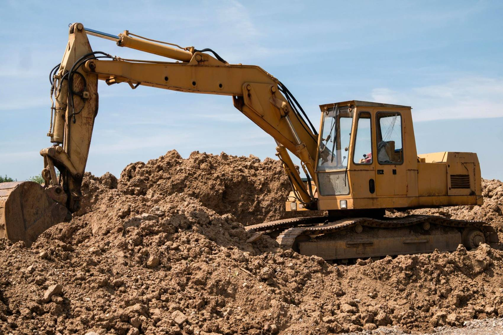
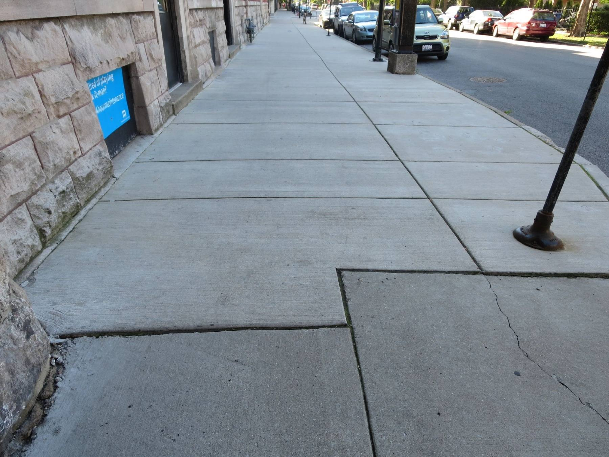
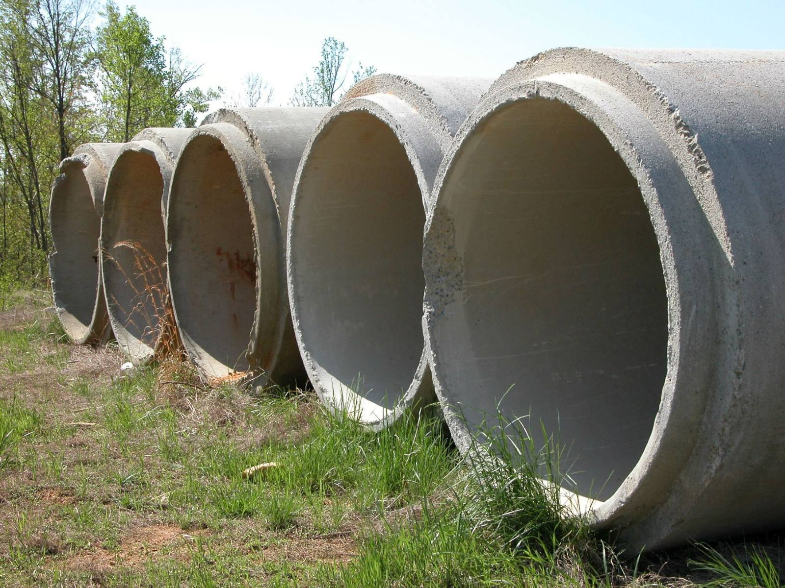
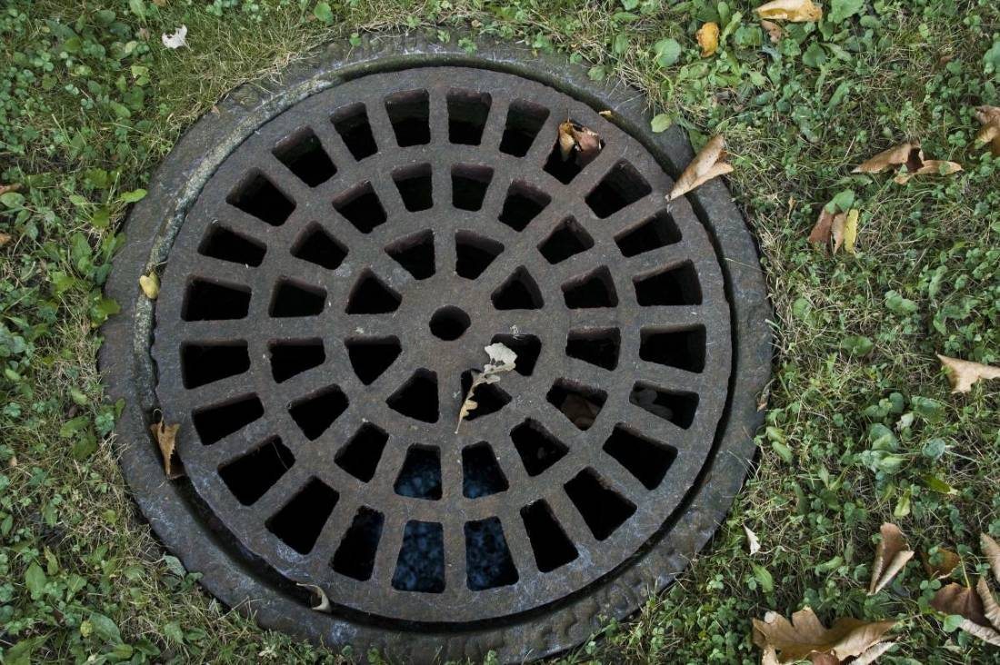
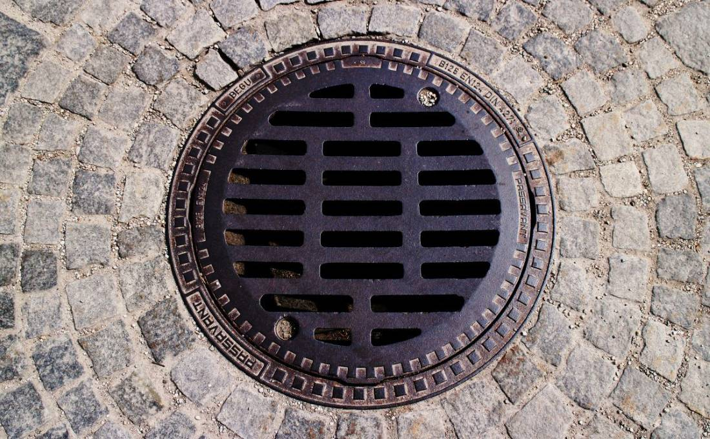
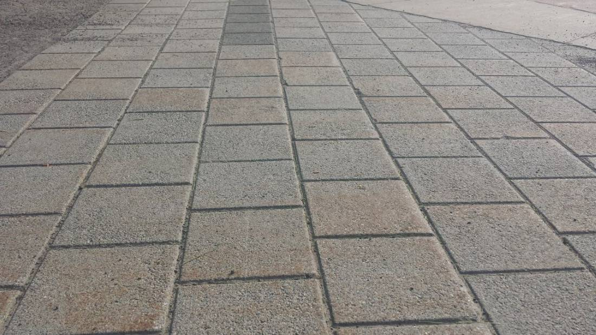
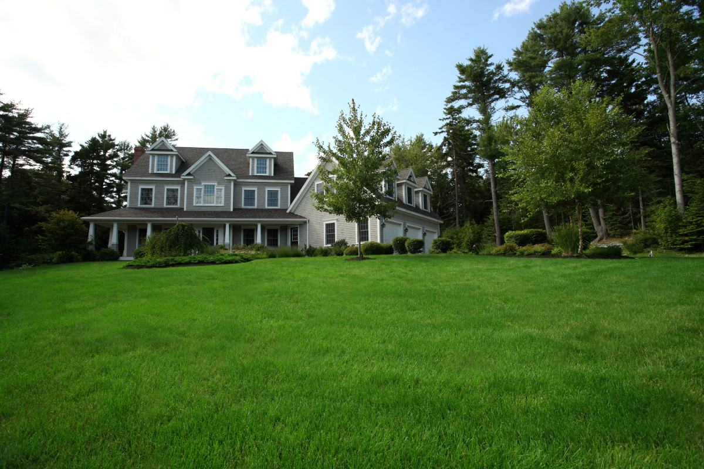

El pavimento y su permiso
Romper una calle o una vereda no es sólo picar: hay una autorización de por medio. Cuál y ante quién lo define la municipalidad de cada comuna, y conviene preguntarlo antes de empezar, no después.
Pitrufquén · Región de La Araucanía
Una cañería puede cruzar una calle, una vereda, un acceso o un jardín sin abrir zanja: se perfora por debajo y arriba queda todo como estaba. Eso es la topo tunelera, y casi nadie sabe que existe hasta que le presupuestan romper el pavimento.
01 — La pieza de esta página
Todo el oficio cabe en un dibujo. Se hace una cámara a cada lado de lo que no se puede romper, se perfora de una a la otra por debajo, y la cañería entra tirada desde el otro extremo. Arriba no pasa nada.
Un pozo chico a un costado. Es lo único que se abre, y va donde sí se puede excavar: la berma, el antejardín, el patio.
Se marca en superficie de dónde a dónde va. Antes de perforar hay que saber qué más pasa por abajo, y ése es el trabajo que no se ve.
Se pasa bajo la base del pavimento, no a ras. Si se pasa muy arriba, el terreno cede con el tránsito; si se pasa muy abajo, la cámara de llegada se complica.
Agua, alcantarillado, gas, electricidad, fibra. En comunas chicas los planos casi nunca existen o no están al día, y por eso se sondea y se pregunta antes, no después.
Al otro lado se abre el segundo pozo y la cañería entra tirada por el ducto que quedó. Después se cierran las dos cámaras y la calle sigue igual que en la mañana.
Esto es conocimiento general del oficio, escrito por mí: explica el método. No describe el equipo de Robles Sabut ni sus capacidades —hasta qué distancia, qué diámetro y en qué terrenos trabaja lo completa el negocio antes de publicar—, y no hay ninguna medida en toda la página porque son datos de máquina.

La zanja no cuesta lo que cuesta abrirla.
Cuesta lo que cuesta cerrarla.
02 — Lo que no está en el presupuesto
Nadie cotiza mal a propósito. Lo que pasa es que el presupuesto de la zanja incluye abrirla, y casi nunca incluye todo lo demás. Éstas son las seis partidas que aparecen después.
Romper una calle o una vereda no es sólo picar: hay una autorización de por medio. Cuál y ante quién lo define la municipalidad de cada comuna, y conviene preguntarlo antes de empezar, no después.
Cerrar y volver a pavimentar. Es la partida más cara de todas y la que más se subestima, y aun así el parche nunca queda igual que el resto: se nota siempre.
Lo que se rompe en el antejardín se repone, pero un árbol con las raíces cortadas no vuelve. Y el acceso de un vecino cerrado tres días también tiene costo, sólo que no lo paga el mismo.
Una zanja es abrir, tender, tapar, compactar y reponer. Cada uno de esos pasos es un día o parte de uno, y todos con el paso cortado.
El riesgo real. Cortar un cable, romper una matriz o partir una fibra convierte una obra chica en un problema serio, y la máquina no avisa antes.
Una zanja mal compactada se hunde meses después. El trabajo ya se pagó, ya se cerró, y el hoyo aparece igual cuando nadie está mirando.
Nada de esto significa que la zanja esté mal. Hay obras donde la zanja es la opción correcta —tramos cortos, terreno abierto, cañerías grandes— y en esos casos abrir sale más barato y más rápido. El punto es que la decisión se tome comparando las dos cosas completas.

La medida del trabajo bien hecho
Que al día siguiente no se note que alguien estuvo.

03 — Los límites, dichos de frente
La perforación dirigida no es magia: hay condiciones que la hacen fácil y otras que la hacen imposible. Un proveedor que dice que siempre se puede está vendiendo, y quien paga la sorpresa es el cliente.
Las cuatro cosas que se miran antes de comprometer un trabajo:
Criterios generales del método, no las capacidades de este equipo. Hasta qué distancia, qué diámetros y en qué terrenos trabaja Robles Sabut lo dice Robles Sabut: son datos de máquina y acá no se inventa ninguno.
04 — Arriba y abajo




05 — Contacto
Con estas cuatro cosas se puede orientar por teléfono
Las seis líneas en cursiva son las que hay que llenar antes de publicar. Las tres de máquina son las que ganan el trabajo: una constructora que compara proveedores empieza por ahí, y hoy no las encuentra escritas en ninguna parte de la zona.
Para el dueño de Obras Sanitarias Robles Sabut
Ésa es toda la oportunidad. Nadie busca «topo tunelera» por casualidad: lo busca quien ya sabe que lo necesita, y lo escribe tal cual en Google. Son pocas consultas al mes y todas valen mucho.
Y hay algo más: la mitad de sus clientes potenciales ni siquiera sabe que el método existe. Les presupuestan romper el pavimento, lo pagan, y se enteran después. Una página que explique el método en dos minutos no sólo lo encuentra a usted: le crea el mercado.